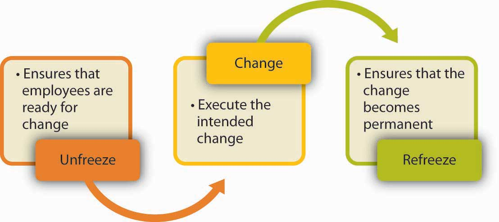

How do you plan, organize, and execute change effectively? Some types of change, such as mergers, often come with job losses. In these situations, it is important to remain fair and ethical while laying off otherwise exceptional employees. Once change has occurred, it is vital to take any steps necessary to reinforce the new system. Employees can often require continued support well after an organizational change.
One of the most useful frameworks in this area is the three-stage model of planned change developed in the 1950s by psychologist Kurt Lewin.Lewin K. (1951). Field theory in social science. New York: Harper & Row. This model assumes that change will encounter resistance. Therefore, executing change without prior preparation is likely to lead to failure. Instead, organizations should start with unfreezingMaking sure that organizational members are ready for and receptive to change., or making sure that organizational members are ready for and receptive to change. This is followed by changeExecuting the planned changes., or executing the planned changes. Finally, refreezingEnsuring that change becomes permanent and the new habits, rules, or procedures become the norm. involves ensuring that change becomes permanent and the new habits, rules, or procedures become the norm.
Figure 7.14 Lewin’s Three-Stage Process of Change
Many change efforts fail because people are insufficiently prepared for change. When employees are not prepared, they are more likely to resist the change effort and less likely to function effectively under the new system. What can organizations do before change to prepare employees? There are a number of things that are important at this stage.
Do people know what the change entails, or are they hearing about the planned changes through the grapevine or office gossip? When employees know what is going to happen, when, and why, they may feel more comfortable. Research shows that those who have more complete information about upcoming changes are more committed to a change effort.Wanberg, C. R., & Banas, J. T. (2000). Predictors and outcomes of openness to changes in a reorganizing workplace. Journal of Applied Psychology, 85, 132–142. Moreover, in successful change efforts, the leader not only communicates a plan but also an overall vision for the change.Herold, D. M., Fedor D. B., Caldwell, S., & Liu, Y. (2008). The effects of transformational and change leadership on employees’ commitment to a change: A multilevel study. Journal of Applied Psychology, 93, 346–357. When this vision is exciting and paints a picture of a future that employees would be proud to be a part of, people are likely to be more committed to change.
Ensuring that top management communicates with employees about the upcoming changes also has symbolic value.Armenakis, A. A., Harris, S. G., & Mossholder, K. W. (1993). Creating readiness for organizational change. Human Relations, 46, 681–703. When top management and the company CEO discuss the importance of the changes in meetings, employees are provided with a reason to trust that this change is a strategic initiative. For example, while changing the employee performance appraisal system, the CEO of Kimberly Clark made sure to mention the new system in all meetings with employees, indicating that the change was supported by the CEO.
People are more likely to accept change if they feel that there is a need for it. If employees feel their company is doing well, the perceived need for change will be smaller. Those who plan the change will need to make the case that there is an external or internal threat to the organization’s competitiveness, reputation, or sometimes even its survival and that failure to act will have undesirable consequences. For example, Lou Gerstner, the former CEO of IBM, executed a successful transformation of the company in the early 1990s. In his biography Elephants Can Dance, Gerstner highlights how he achieved cooperation as follows: “Our greatest ally in shaking loose the past was IBM’s eminent collapse. Rather than go with the usual impulse to put on a happy face, I decided to keep the crisis front and center. I didn’t want to lose the sense of urgency.”Gerstner, L. V. (2002). Who says elephants can’t dance? Inside IBM’s historic turnaround. New York: HarperCollins; Kotter, J. P. (1996). Leading change. Boston: Harvard Business School Press.
To convince people that change is needed, the change leader does not necessarily have to convince every person individually. In fact, people’s opinions toward change are affected by opinion leaders or those people who have a strong influence over the behaviors and attitudes of others.Burkhardt, M. E. (1994). Social interaction effects following a technological change: A longitudinal investigation. Academy of Management Journal, 37, 869–898; Kotter, J. P. (1995, March–April). Leading change: Why transformations fail. Harvard Business Review, 73(2), 59–67. Instead of trying to get everyone on board at the same time, it may be more useful to convince and prepare the opinion leaders. Understanding one’s own social networks as well as the networks of others in the organization can help managers identify opinion leaders. Once these individuals agree that the proposed change is needed and will be useful, they will become helpful allies in ensuring that the rest of the organization is ready for change.Armenakis, A. A., Harris, S. G., & Mossholder, K. W. (1993). Creating readiness for organizational change. Human Relations, 46, 681–703. For example, when Paul Pressler became the CEO of Gap Inc. in 2002, he initiated a culture change effort in the hope of creating a sense of identity among the company’s many brands such as Banana Republic, Old Navy, and Gap. For this purpose, employees were segmented instead of trying to reach out to all employees at the same time. Gap Inc. started by training the 2,000 senior managers in “leadership summits,” who in turn were instrumental in ensuring the cooperation of the remaining 150,000 employees of the company.Nash, J. A. (Nov/Dec 2005). Comprehensive campaign helps Gap employees embrace cultural change. Communication World, 22(6).
Employees should feel that their needs are not ignored. Therefore, management may prepare employees for change by providing emotional and instrumental support. Emotional support may be in the form of frequently discussing the changes, encouraging employees to voice their concerns, and simply expressing confidence in employees’ ability to perform effectively under the new system. Instrumental support may be in the form of providing a training program to employees so that they know how to function under the new system. Effective leadership and motivation skills can assist managers to provide support to employees.
Studies show that employees who participate in planning change efforts tend to have more positive opinions about the change. Why? They will have the opportunity to voice their concerns. They can shape the change effort so that their concerns are addressed. They will be more knowledgeable about the reasons for change, alternatives to the proposed changes, and why the chosen alternative was better than the others. Finally, they will feel a sense of ownership of the planned change and are more likely to be on board.Wanberg, C. R., & Banas, J. T. (2000). Predictors and outcomes of openness to changes in a reorganizing workplace. Journal of Applied Psychology, 85, 132–142. Participation may be more useful if it starts at earlier stages, preferably while the problem is still being diagnosed. For example, assume that a company suspects there are problems with manufacturing quality. One way of convincing employees that there is a problem that needs to be solved would be to ask them to take customer calls about the product quality. Once employees experience the problem firsthand, they will be more motivated to solve the problem.
The second stage of Lewin’s three-stage change model is executing change. At this stage, the organization implements the planned changes on technology, structure, culture, or procedures. The specifics of how change should be executed will depend on the type of change. However, there are three tips that may facilitate the success of a change effort.
As the change is under way, employees may experience high amounts of stress. They may make mistakes more often or experience uncertainty about their new responsibilities or job descriptions. Management has an important role in helping employees cope with this stress by displaying support, patience, and continuing to provide support to employees even after the change is complete.
During a change effort, if the organization can create a history of small wins, change acceptance will be more likely.Kotter, J. P. (1996). Leading change. Boston: Harvard Business School Press; Reay, T., Golden-Biddle, K., & Germann, K. (2006). Legitimizing a new role: Small wins and microprocesses of change. Academy of Management Journal, 49, 977–998. If the change is large in scope and the payoff is a long time away, employees may not realize change is occurring during the transformation period. However, if people see changes, improvements, and successes along the way, they will be inspired and motivated to continue the change effort. For this reason, breaking up the proposed change into phases may be a good idea because it creates smaller targets. Small wins are also important for planners of change to make the point that their idea is on the right track. Early success gives change planners more credibility while early failures may be a setback.Hamel, G. (2000, July/August). Waking up IBM. Harvard Business Review, 78(4), 137–146.
When the change effort is in place, many obstacles may crop up along the way. There may be key people who publicly support the change effort while silently undermining the planned changes. There may be obstacles rooted in a company’s structure, existing processes, or culture. It is the management’s job to identify, understand, and remove these obstacles.Kotter, J. P. (1995, March–April). Leading change: Why transformations fail. Harvard Business Review, 73(2), 59–67. Ideally, these obstacles would have been eliminated before implementing the change, but sometimes unexpected roadblocks emerge as change is under way.
After the change is implemented, the long-term success of a change effort depends on the extent to which the change becomes part of the company’s culture. If the change has been successful, the revised ways of thinking, behaving, and performing should become routine. To evaluate and reinforce (“refreeze”) the change, there are a number of things management can do.
To make change permanent, the organization may benefit from sharing the results of the change effort with employees. What was gained from the implemented changes? How much money did the company save? How much did the company’s reputation improve? What was the reduction in accidents after new procedures were put in place? Sharing concrete results with employees increases their confidence that the implemented change was a right decision.
To ensure that change becomes permanent, organizations may benefit from rewarding those who embrace the change effort (an aspect of the controlling function). The rewards do not necessarily have to be financial. The simple act of recognizing those who are giving support to the change effort in front of their peers may encourage others to get on board. When the new behaviors employees are expected to demonstrate (such as using a new computer program, filling out a new form, or simply greeting customers once they enter the store) are made part of an organization’s reward system, those behaviors are more likely to be taken seriously and repeated, making the change effort successful.Gale, S. F. (2003). Incentives and the art of changing behavior. Workforce Management, 82(11), 48–54.
While Lewin’s three-stage model offers many useful insights into the process of implementing change, it views each organizational change as an episode with a beginning, middle, and end. In contrast with this episodic change assumption, some management experts in the 1990s began to propose that change is—or ought to be—a continuous process.
The learning organization is an example of a company embracing continuous change. By setting up a dynamic feedback loop, learning can become a regular part of daily operations. If an employee implements a new method or technology that seems to be successful, a learning organization is in a good position to adopt it. By constantly being aware of how employee actions and outcomes affect others as well as overall company productivity, the inevitable small changes throughout organizations can be rapidly absorbed and tailored for daily operations. When an organization understands that change does indeed occur constantly, it will be in a better position to make use of good changes and intervene if a change seems detrimental.
Effective change effort can be conceptualized as a three-step process in which employees are first prepared for change, then change is implemented, and finally the new behavioral patterns become permanent. According to emerging contemporary views, it can also be seen as a continuous process that affirms the organic, ever-evolving nature of an organization.